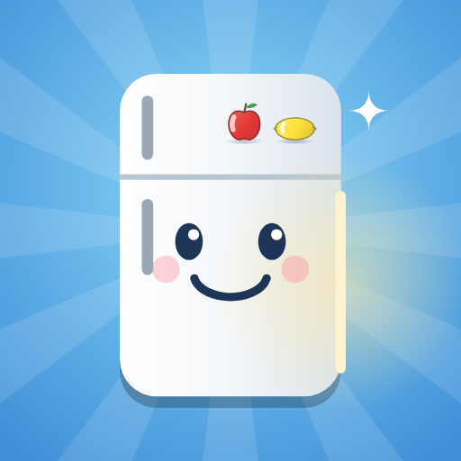
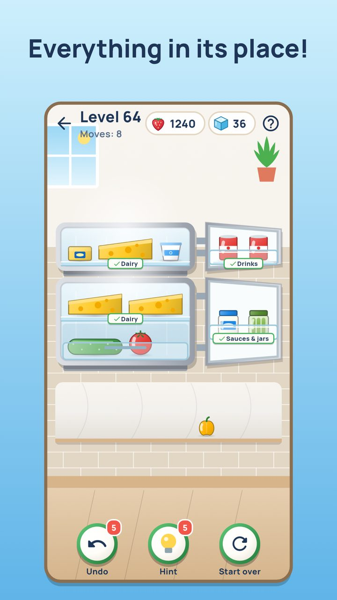

Tidy Fridge
Put the groceries away, shelf by shelf!
An open fridge waits in front of you, and the groceries from the shop lie on the counter. Drag them onto the shelves: one kind of food per shelf, packed snug with no gaps. Bottles and jars go in the door, vegetables and fruit in the drawer, ice cream in the freezer, and spoiled food in the bin. When everything is in its place, click! The door swings shut.

- A logic puzzle of its own: think which shelf takes what.
- 300 levels and 20 fridges: mint retro, cherry red, steel, two-door ones.
- Something new as you go: door racks, spoiled food, the crisper drawer, a heavy pot, the freezer.
- My kitchens, fridge of the day and daily tasks.
- No rush, no losing: hints and undo are always at hand.
- Plays offline, in Russian and English.